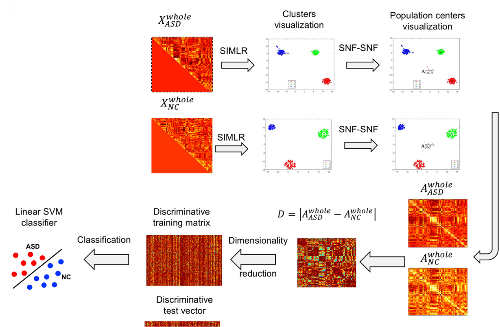
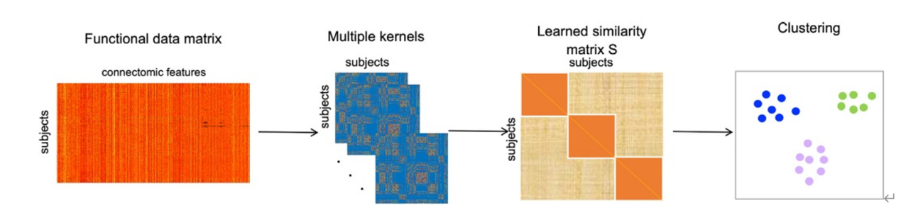
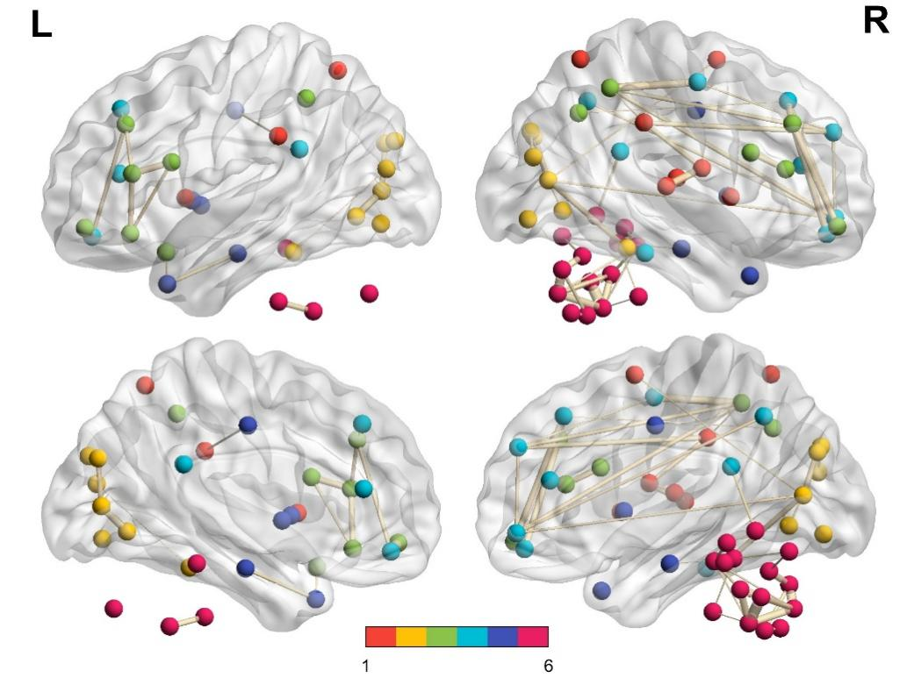

本文是对整个实验的总结。
在我们本次实验中，我们采用了NAGFS方法进行疾病的诊断。NAGFS方法其中主要涉及到了两种算法：SIMLR和SNF算法。在本次实验中，我们花了很大的精力去研究SIMLR方法中的数学公式，同时也学习到了很多机器学习相关的知识。本文是对我们学习的成果的简要介绍。
注：笔者在最后做了总结，如果对论文不感兴趣可以直接拉到最后。概述
本文将从数据预处理、特征选择、分类以及可视化四个方面介绍该课题所用到的核心技术。
首先，我们通过fMRI数据的时间序列计算Pearson相关系数，以获得脑区相关矩阵来描述大脑脑区的连接特征。
然后我们通过SIMLR框架进行聚类。SILMR通过使用多个核函数，有效学习最适合数据集的样本间相似性度量。
之后，利用SNF技术,通过局部扩散和全局融合过程，将输入网络非线性的整合成一个单一的网络，最后我们通过计算残差网络图谱，也就是两个网络图谱之间的绝对差值，选择差异最大的非零特征，并使用这些特征训练支持向量机分类器进行分类。
采用上述方法，我们最终取得了较好的分类结果。在实际训练时，我们对选取特征的数量进行的多次试验，最好准确度达到了71.84%，并且通过BrainNet Viewer工具实现了大脑的可视化。
数据预处理
我们的原始数据是通过fMRI数据得到的时间序列，这个时间序列的维度是1035×n×116，我们通过时间序列计算每个脑区的Pearson相关系数。
我们可以得到每个人的皮尔逊相关系数矩阵是116×116，一共有1035个人，116个脑区，每个人有6670个特征，通过提取上三角矩阵，我们总共可以提取到（116×115）/2个特征，即6670个特征。在时间序列的数据中存在很多零元素，因此导致了得到的皮尔逊相关系数矩阵中很多NAN值，为此，需要将皮尔逊相关稀疏矩阵中的NAN值全部修改为0。我们可以利用脑区相关矩阵来描述大脑脑区的连接特征，这样就得到了本次实验的输入数据。
特征选择
NAGFS方法
NAGFS是一种脑网络图谱引导特征选择的方法。该方法通过学习功能性脑网络图谱来引导特征选择，从整体上提高了对脑网络连接的识别。NAGFS不仅提高了特征选择的性能，而且提升了对神经系统疾病分类的准确度。
在本课题中，我们通过使用FMRI获得的数据，可以提取出不同脑功能区域的连通性特征。在实际应用中，由于数据的维度过高，为了方便分类，一般使用特征选择进行降维处理。这是因为特征提取会抹去原始数据的生物学含义。传统的特征选择面临着多种挑战。其一是泛化性和可重复性，传统方法在不同数据集之间的表现并不一致，为特定数据集选择最佳的特征选择方法是一件耗时且困难的事。其二是计算成本和可扩展性，传统的方法计算成本过高，而且当特征数量不断增大时，分类性能明显下降。通过使用NAGFS方法，我们可以避免上述问题。
SIMLR算法
SIMLR算法是一个从输入的单细胞RNA序列数据中学习细胞与细胞之间相似度矩阵的框架。单细胞的RNA序列数据和我们在本次实验中的数据都是高维特征数据，使用该算法可以对大规模数据进行良好地处理，同时也极大程度上提高了聚类的效果。 SNF相似网络融合
SNF是一种相似网络融合技术，该技术用于将多个相似性网络整合为一个更具代表性的网络，从而提升数据分析和模式识别的准确性和可靠性。 SNF相似网络融合技术主要包括以下步骤： 1. 构建相似性网络：从原始数据中计算出多个相关矩阵，每个矩阵表示一个相似性网络。相似性网络是一种图结构，其中的数据样本被表示为节点，边表示样本之间的相似性或者相关性。 2. 相似性网络归一化：对每一个相似性网络进行归一化处理，从而确保不同的网络之间的相似性矩阵具有相似的尺度，通过这种方法可以消除不同网络之间的度量差异。 3. 构建相似性整合矩阵：将归一化之后的相似性矩阵进行整合，从而得到一个融合的相似性矩阵，其中的整合方法可以是简单的加权平均、加权求和或者是其他更复杂的整合方法。 4. 构建融合网络：基于融合的相似性矩阵构建一个新的融合网络，在这个融合网络中，节点表示数据样本，边的权重表示样本之间的融合相似性。
分类
本课题采用的SVM向量机进行分类。SVM分类的基本思想是将样本映射到高维特征空间，并在该空间中寻找一个最优的超平面，使得不同类别的样本能够被最大间隔分开。这种映射是通过核函数来实现的，核函数可以将低维特征空间中的样本映射到高维空间中，从而使得样本在高维空间中更容易分开。简言之，SVM就是一种二类分类模型，他的基本模型是定义在特征空间的间隔最大的线性分类器，SVM的学习策略就是间隔最大化。
SVM是针对线性可分情景的广义线性回归模型，对于线性不可分的情况，我们需要非线性分类器，线性分类器无法解决这种特殊问题，解决方法就是通过“核技巧”将低维特征空间的线性不可分样本映射到高维空间中，实现对非线性样本进行线性分析，本课题就是通过SVM中的高斯核函数进行分类。
可视化
在matlab中下载BrainNet Viewer工具包，将最后得到的数据进行转换，将所需的边文件、节点文件等导入工具中，将大脑疾病诊断表征权重可视化，从而实现该诊断系统的可视化。 总结
在本次实验中，由于我们小组没有在本科阶段接受系统的机器学习教学，因此基础欠佳。我们花费了很长时间去学习机器学习的基础知识，了解了很多机器学习思想，掌握了多种机器学习算法。我们从数据预处理开始从头复现了一个项目，除了算法核心代码我们只做了逐行解读（代码过长，没有展现在本网站中），其余的代码均是独立完成。
在我们阅读公式的过程中，我们遇到了很大的困难。其原因有很多：
- 这是我们第一次阅读论文，缺乏阅读论文的经验；
- 我们这一届计算机科学专业对机器学习领域的教学较少；
- 我们没有系统学过矩阵论、最优化等理论；
- 时间紧张，我们只用了不到七天的时间完成了整个项目并结束答辩，随后又花费七天完善了项目，并且完成了医学诊疗系统软件。
尽管我们曾面临诸多挑战，但也因此积累了丰富的经验,获得了满满的成就感。
在项目的完成过程中，笔者对机器学习和深入阅读论文产生了浓厚的兴趣。尽管之前曾自学深度学习，但从未深入研究复杂的数学公式或专业领域的论文。这次的尝试让笔者感到仿佛在解一个精彩的谜题，每当遇到难题时，思绪万千，各种猜测。然后通过查阅资料逐渐修正自己的理解。最终总会有那一刻，一切都豁然开朗。这种经历真是人生中的一大乐事。
另一个宝贵的收获是通过团队协作完成任务，笔者深刻体会到了团队合作的力量。一起研读论文，不仅使原本枯燥的过程变得更加愉快，还加强了我们之间的联系与理解。
第三个收获是笔者领悟到了“通过项目学习”的强大威力，这将对笔者的未来学习提供宝贵的指导和思路。
最后，笔者由衷感谢学校为我们提供了这个难得的机会，让我们共同探讨前沿课题，完成了这次充满趣味的任务。